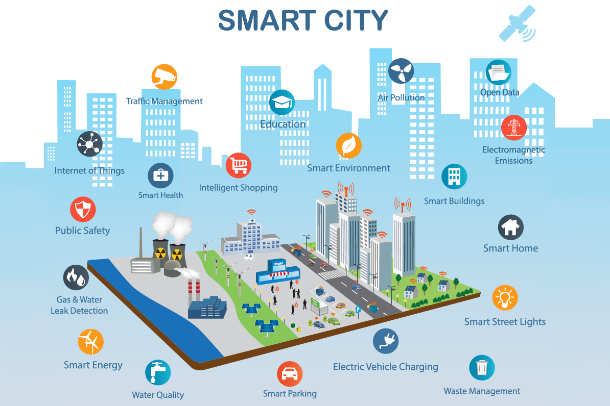

AI RELATE
ADVANTAGES OF USING SMART HOMES
- CONVENIENCE

- SEFCURITY
- SAVING ENERGY AND MONEY
- SAFETY APPLIANCES AND LIGHTING SYSTEM
- SAVE PRECIOUS TIME
- INCREASES PEACE OF MIND
SMART CITIES
- A smart city is developed when 'smart' technologies are deployed to change the nature and economics of the surrounding infrastructure.
- It uses digital technology to connect, protect and enhance the lives of citizens.
WHAT DOES A SMART CITY DO?
- Smart cities improve the quality of the lives of citizens. They often employ a mobile app to give fast access to traffic information, road conditions and more.
- Examples are - parking and smart waste management
HOW DOES A SMART CITY WORK?
- A smart city collects and analyzes data from IoT sensors and video cameras.
- In essense, it 'senses' the enviornment so that the city operator can decide how and when to take action.
Content